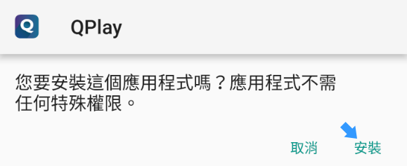
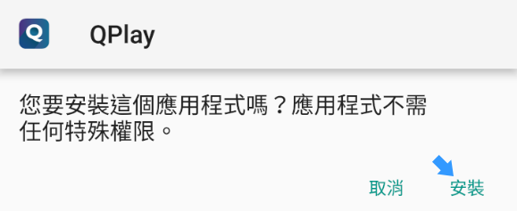

Android支援版本為5.0以上,在運行Android 8.0及以上版本，用戶必須到設定開啟「安裝未知應用程序」進行安裝：
1.點選外部來源
2.點選安裝

3.允許開啟未知APP

用戶於Android 7.1.1或更低的設備上，他們應該在設置>安全性中開啟未知來源設定
1.點選『設定』進入設定頁面。進入到設定頁面之後往下滑動找到『安全性』點選進入設定頁面。

2.往下滑動找到『不明的來源』打勾即可

3.跳出提示訊息，請按確定


1.點選外部來源
2.點選安裝

3.允許開啟未知APP
1.點選『設定』進入設定頁面。進入到設定頁面之後往下滑動找到『安全性』點選進入設定頁面。
2.往下滑動找到『不明的來源』打勾即可
3.跳出提示訊息，請按確定